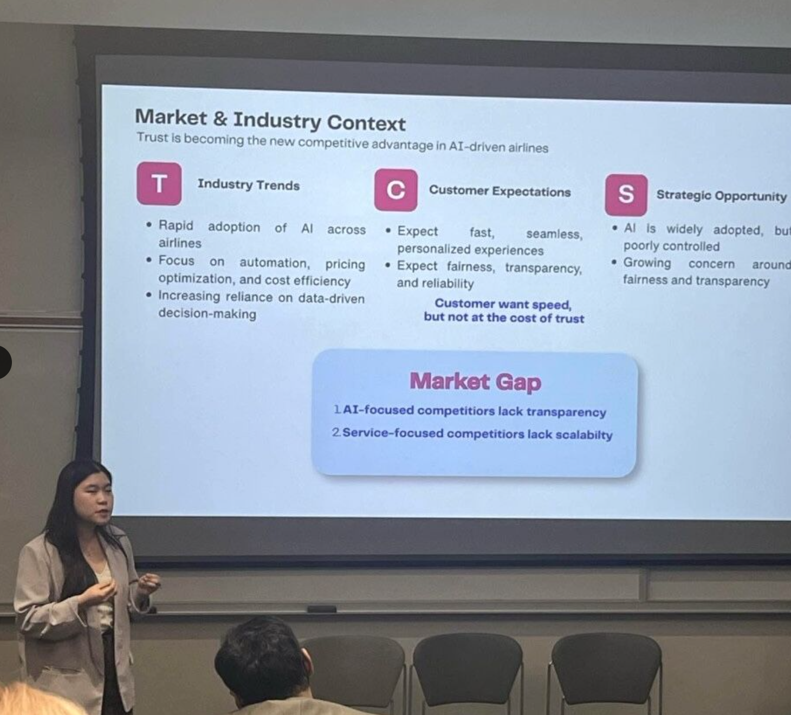

The Challenge
As artificial intelligence becomes more integrated into business decisions, organizations face the challenge of balancing innovation with transparency, accountability, and user trust. This project explored how responsible AI principles could be applied to address real organizational challenges.
My Approach
I approached the challenge by examining the relationship between emerging technologies, business strategy, and ethical decision-making. I developed recommendations focused on responsible implementation, stakeholder trust, and practical business considerations.

The Outcome
The project received first place in the Responsible AI Case Competition. It strengthened my ability to connect technology with strategic problem-solving and communicate recommendations clearly, while reinforcing the importance of responsible innovation.
Back to My Work